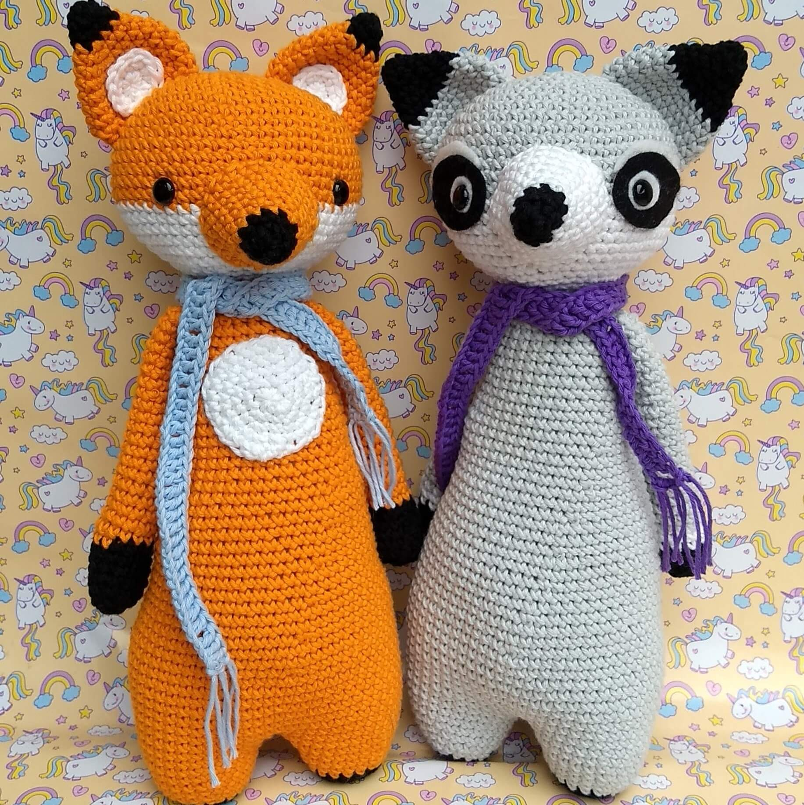
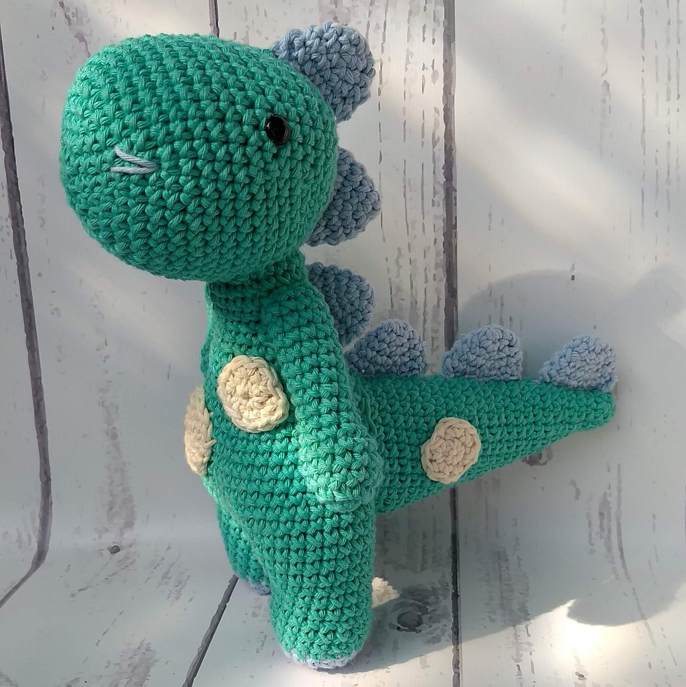
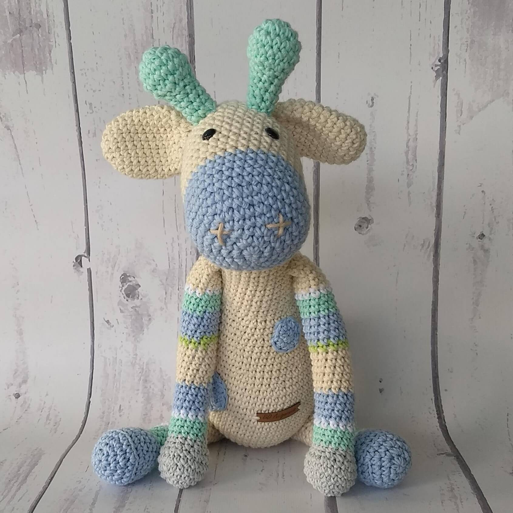

Bienvenidos a B.O Amigurumis!
Un amigurumi es un adorable muñeco tejido con la técnica de crochet. Los amigurumis son ideales para bebes y niños ya que representa un símbolo de apego. No es solo un muñequito bonito o un pequeño juguete, para los japoneses los amigurumis alimentan el espíritu del niño o niña que aun todos conservamos en nuestro interior

El zorro y el mapache
Este duo es inseparable, tienen muchas aventuras juntos!

Dino!
Dice ser el ultimo de su especie, un excelente compañero que te cuidará siempre

La jirafa
La mas alta del reino animal, como no querer tenerla siempre cerca?